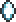
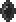
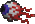

Demon Eye
| Drops | |
|---|---|
| Coins: | 75 |
| Item | Rate |
|  Lens | 33.33% |
|  Black Lens | 0.67% |
| Demon Eye | |
|---|---|
|  | |
| Statistics | |
| Type | Flying Enemy |
| Environment | Surface |
| AI Type | Demon Eye |
| Damage | 18 |
| Max Life | 60 |
| Defense | 2 |
The Demon Eye is a flying enemy that appears at night when above ground. Its trajectory is changed when hit with a weapon that causes knockback. It has a slow turn rate, follows the player, and bounces off blocks. They have an increased chance of spawning during a new moon.
It is recommended to use ranged weapons, such as the Wooden Bow, when dealing with Demon Eyes, as they spend much of their time out of reach. The best time to attack it is when it is turning, as a successful hit will knock it back and interrupt its flight pattern, allowing you to get in more shots before it reaches you.
History
- 1.0.5: May no longer enter water and doesn't make a splash sound when hitting water.
- 1.0.3: Now has a chance to drop Black Lenses.
- Pre-Release: Introduced.